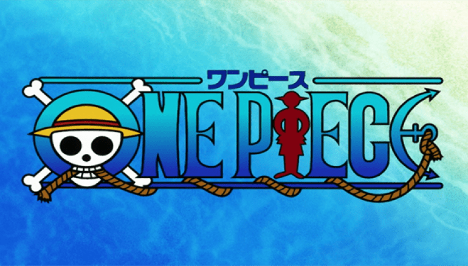

¿Qué es?
One piece nació como una serie de manga o cómic japonés creado por Eichiro Oda y adaptada a una serie animada por TOEI animation que cuenta con más de 1000 episodios hasta la fecha de creación de ésta página, es una historia que simple vista puede parecer infantil pero que contiene un trasfondo de crítica de varias problemáticas sociales modernas como racismo, discrimación, inequidad, etc. Pese a esto no deja de lado su objetivo principal que es el de entretener.
Debido a su gran exito se ha transmitido en varios paises y los mangas se han distribuido por todo el mundo. Tanto la serie animada como el manga se encuentran en emisión desde hace más de 20 años, siendo uno de los animes más largos de la historia. lo que se pretende en esta página es recopilar información mientras se rinde tributo a este anime que ha divertido al autor de ésta página. Mientras se practican los conceptos html y css.